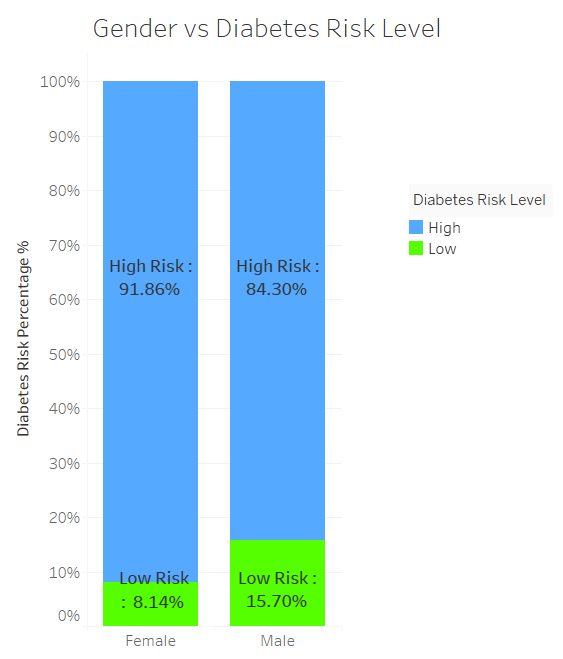
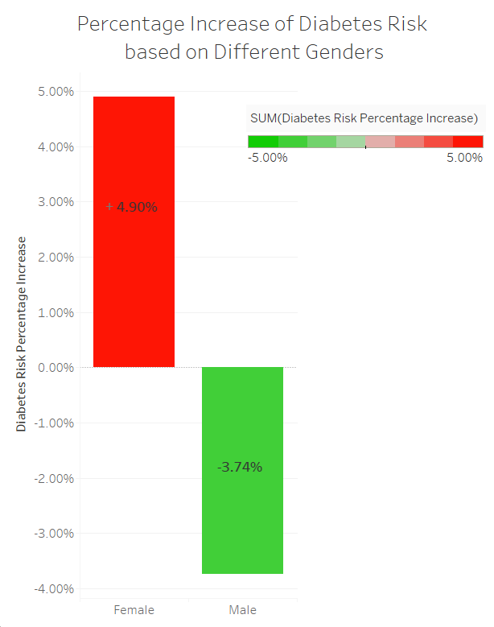
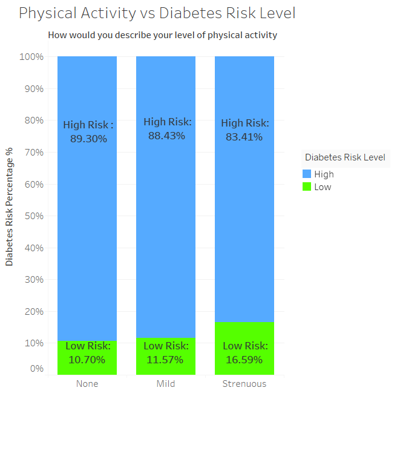
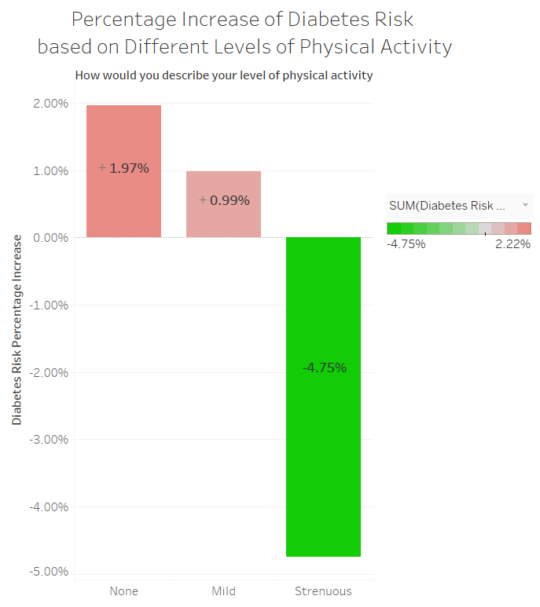
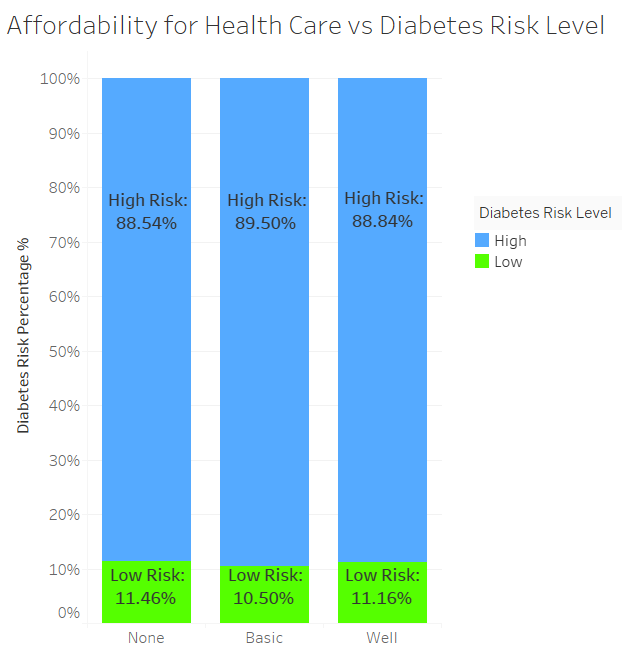
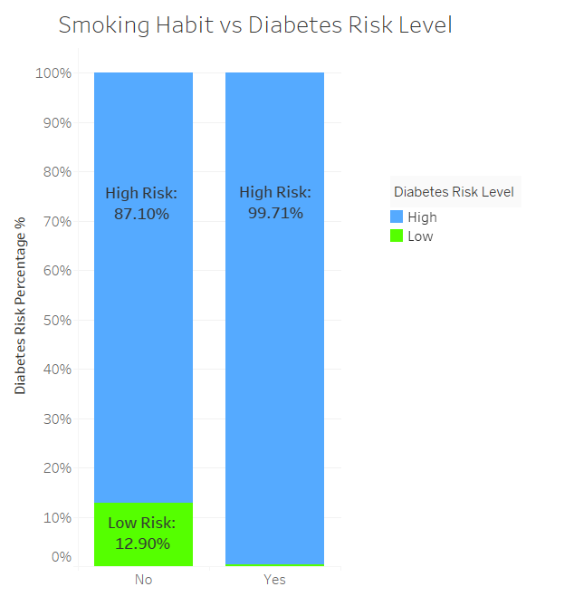
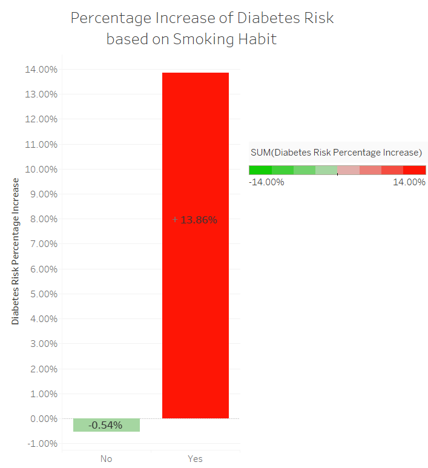

What relates to Diabetes Risk
Diabetes is a group of metabolic diseases characterized by high blood sugar.
Currently, diabetes has become a more and more common diease.
However, it is reported that diabetes risk can be reduced by healthier diets, higher levels of physical activity and smoking cessation, etc.
Therefore, I would like to explore what factors relate to diabetes and alert people about their own risk level of diabetes so that they are able to take preventive measures.
A diabetes dataset from an Indian hospital is used. A total of 4804 patients is investigated. 87.57% of them have high diabetes risk level.
How the percentage of high diabetes risk patients varies corresponding to the following four factors is explored here.
- Gender
- Level of Physical Activity
- Affordability for Health Care
- Smoking Habit
1. Gender
Diabetes Risk Level vs. Gender is shown at right. As we can see, Female suffers more from diabetes risk. Difference in low risk percentage is 7.56%.

Diabetes Risk Percentage Increase over Average vs. Gender is shown at right. Female suffers a 4.90% increase in diabetes risk than average. However, male has a 3.74% decrease in high diabetes risk.

2. Physical activity
Diabetes Risk Level vs. Physical Activity is shown at right. As we can see, patients who conduct trenuous physical activities have a dramatic increase in percentage of low diabetes risk. Patients who conduct mild physical activities are slightly larger than those who conducted none.

Diabetes Risk Percentage Increase over Average vs. Physical Activity is shown at right. Patients who conducted trenuous physical activities has a 4.75% decrease in high diabetes risk than average. However, other two groups suffer an increase.

3. Affordability for Health Care
Diabetes risk level vs. Affordability for Health care is shown at right. Surprisingly, people who have basic affordability for health care have the lowest diabetes risk and the difference is not dramatic.
It is possible that people who can't afford health care are in overall bad situation and people who have well affordability suffer from illness of affluence.

4. Smoking Habit
Diabetes risk level vs. Smoking Habit is shown at right. As we can see, smoking is a dramatic factor for diabetes risk in this dataset. Almost all patients who have a smoking habit are in high diabetes risk level. Difference in low risk percentage is nearly 13%.

Diabetes Risk Percentage Increase over Average vs. Smoking Habit is shown at right. Smokers suffer a 13.86% increase in diabetes risk than average. However, non-smokers has a 0.54% decrease in high diabetes risk.

Summary
Gender, physcial activity level and smoking habit have dramatic impact on diabetes risk level. Female, people who conduct few physcial activities and smokers should be more alert with their potential diabetes risk.